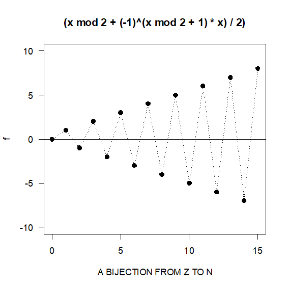
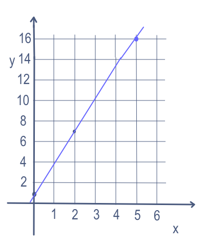
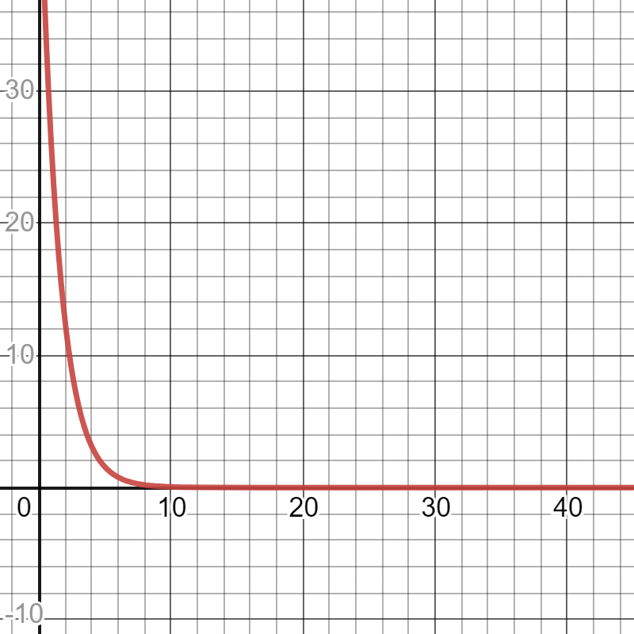

Sequences, Series & the Binomial Theorem
Almost everything that grows, shrinks, repeats, or accumulates can be written as a list of numbers in order — a paycheck that rises by the same raise every year, a medication that loses half its concentration every six hours, a bouncing ball that gives back a fixed fraction of its height. This chapter teaches you how to describe such a list precisely, how to jump straight to the hundredth entry without writing out the first ninety-nine, and how to add up a whole stack of them with one short formula instead of a calculator marathon. Along the way you will meet a strange and genuinely useful fact: some sums that never end still add up to an ordinary finite number. We finish with Pascal's triangle and the binomial theorem, which let you expand something like (x + 2)4 without multiplying four binomials by hand. Nothing here requires new algebra — only careful bookkeeping and a willingness to write the steps down.
By the end of this chapter you can
- Read and write sequence notation, and generate terms from an explicit or a recursive formula.
- Convert a written-out list into a formula, and state the restriction that the index must be a positive integer.
- Identify an arithmetic sequence, find its common difference, and use an = a1 + (n − 1)d.
- Add an arithmetic series with Sn = (n)/(2)(a1 + an), and decide whether a given number is even a term of the sequence.
- Identify a geometric sequence, find its common ratio, and use an = a1r n−1 and the finite sum formula (with r ≠ 1).
- Test an infinite geometric series for convergence and, when |r| < 1, evaluate it with S = a1/(1 − r).
- Rewrite a repeating decimal as an exact fraction using an infinite geometric series.
- Build Pascal's triangle, compute binomial coefficients, and expand (a + b)n or pick out a single term of the expansion.
Section 1Sequences

What a sequence actually is
A sequence is an ordered list of numbers. That is the whole definition, and the word ordered is doing all the work: 2, 4, 6, 8 and 8, 6, 4, 2 contain the same numbers but they are different sequences, because position matters. Each number in the list is called a term.
The tidiest way to think about it is this: a sequence is a function whose inputs are the counting numbers. You feed in a position — first, second, third — and the sequence hands back the number that lives there. That is why we do not write a(1), a(2), a(3) the way we would for an ordinary function. We use a subscript instead:
a1, a2, a3, a4, …, an, …
Read a1 as "a sub one" — the first term. The letter n is the index: it is the position number, and it is always a positive whole number (n = 1, 2, 3, 4, …). There is no a0 and no a2.5 in the sequences we work with here. The expression an is called the general term, and it is the prize: if you know an, you know the whole sequence.
The subscript is not a multiplier and not an exponent. a3 means "the third term," while a3 would mean "a cubed." Students lose points on this every single term, so read subscripts out loud until it feels automatic.
Explicit formulas: jump straight to any term
An explicit formula (also called a closed formula) gives an directly in terms of n. You want the 40th term? Substitute n = 40 and you are done. No earlier terms required.
Substitute n = 1: a1 = 5(1) − 3 = 5 − 3 = 2
Substitute n = 2: a2 = 5(2) − 3 = 10 − 3 = 7
Substitute n = 3: a3 = 5(3) − 3 = 15 − 3 = 12
Substitute n = 4: a4 = 5(4) − 3 = 20 − 3 = 17
So the sequence starts 2, 7, 12, 17, …
For the twelfth term, substitute n = 12: a12 = 5(12) − 3 = 60 − 3 = 57.
Notice what you did not have to do: you never computed a5 through a11. That is the power of an explicit formula.
Two notational tricks show up constantly. First, a factor of (−1)n makes the signs alternate: if an = (−1)n n, then a1 = (−1)1(1) = −1, a2 = (−1)2(2) = +2, a3 = −3, a4 = +4. (Using (−1)n+1 instead starts the pattern positive.) Second, watch for excluded values. If an = 10/(n − 4), then n ≠ 4, because that would put a 0 in the denominator — this sequence simply has no fourth term.
Recursive formulas: each term leans on the one before
A recursive formula defines a term using the term (or terms) before it. It always comes in two pieces: a seed — the first term, handed to you outright — and a rule for getting the next term from the last one. Without the seed, the rule has nothing to start from and the sequence is undefined.
The seed is given: a1 = 4
For n = 2, the rule says double the previous term and add 1:
a2 = 2a1 + 1 = 2(4) + 1 = 8 + 1 = 9
For n = 3, the "previous term" is now 9:
a3 = 2a2 + 1 = 2(9) + 1 = 18 + 1 = 19
For n = 4:
a4 = 2a3 + 1 = 2(19) + 1 = 38 + 1 = 39
For n = 5:
a5 = 2a4 + 1 = 2(39) + 1 = 78 + 1 = 79
The sequence is 4, 9, 19, 39, 79, … To get a20 this way you would have to grind through every term up to it — the price of a recursive definition.
The most famous recursive sequence leans on two previous terms: the Fibonacci sequence, defined by a1 = 1, a2 = 1, and an = an−1 + an−2. Adding 1 + 1 = 2, then 1 + 2 = 3, then 2 + 3 = 5, gives 1, 1, 2, 3, 5, 8, 13, 21, … Notice it needs two seeds, because the rule reaches back two steps.
| Feature | Explicit formula | Recursive formula |
|---|---|---|
| Form | an written in terms of n | an written in terms of an−1 (and a seed) |
| Example | an = 5n − 3 | a1 = 2, an = an−1 + 5 |
| Getting a50 | One substitution | 49 steps of arithmetic |
| Best at | Jumping far ahead; graphing | Describing a process that repeats |
| Needs a seed? | No | Yes — always |
- A sequence is an ordered list; a term is written an, where n is the position and is always a positive integer.
- An explicit formula gives an from n directly — substitute once and you have the term.
- A recursive formula gives an from earlier terms and must include a starting value.
- Watch for excluded values of n that would create a zero denominator, and remember (−1)n is the standard sign-alternating switch.
Section 2Arithmetic sequences and series

The common difference
A sequence is arithmetic when you get from each term to the next by adding the same number every time. That number is the common difference, written d. To test a sequence, subtract each term from the one after it:
d = a2 − a1 = a3 − a2 = a4 − a3 = …
If every one of those subtractions gives the same answer, the sequence is arithmetic. If even one differs, it is not. Take 7, 11, 15, 19, 23: 11 − 7 = 4, 15 − 11 = 4, 19 − 15 = 4, 23 − 19 = 4. Same every time, so d = 4. A negative d is perfectly normal — in 20, 17, 14, 11 we have d = 17 − 20 = −3, and the terms march downward.
Because you add d once to get to term 2, twice to get to term 3, and three times to get to term 4, the number of additions is always one less than the term number. That single observation is the formula:
Explicit: an = a1 + (n − 1)d Recursive: a1 given, an = an−1 + d
If you multiply out the explicit form you get an = dn + (a1 − d), which is a linear expression in n. That is why the figure above matters: plot an arithmetic sequence and the points land on a straight line, with d playing the role of the slope. Arithmetic growth is straight-line growth.
Adding them up: the arithmetic series
A series is what you get when you add the terms of a sequence. The sum of the first n terms is the nth partial sum, written Sn. In compact form we use sigma notation:
Sn = ∑k=1n ak = a1 + a2 + a3 + … + an
Read that as "the sum, as k runs from 1 to n, of ak." The letter under the ∑ is the starting index, the number on top is the stopping index, and the expression to the right is what you plug each index into. Sigma notation is shorthand, nothing more — it never means anything you could not write out with plus signs.
There is a beautiful trick for adding an arithmetic series, and the story attached to it is probably half true: a schoolboy named Carl Friedrich Gauss, told to add 1 through 100, noticed that pairing the ends gives 1 + 100 = 101, 2 + 99 = 101, 3 + 98 = 101 — fifty pairs of 101, so 5050. The general version writes the sum forward, then writes it again backward underneath, and adds the two lines column by column:
Sn = a1 + (a1+d) + … + an
Sn = an + (an−d) + … + a1
Every column adds to the same thing, (a1 + an), and there are n columns. So 2Sn = n(a1 + an), which gives the two forms you will actually use:
Sn = (n)/(2) · (a1 + an) or, if you do not know an yet, Sn = (n)/(2) · [2a1 + (n − 1)d]
Step 1 — find the common difference.
d = 11 − 7 = 4. Check the next gaps: 15 − 11 = 4 and 19 − 15 = 4. Consistent, so d = 4 and a1 = 7.
Step 2 — find the 20th term.
an = a1 + (n − 1)d
a20 = 7 + (20 − 1)(4)
a20 = 7 + (19)(4)
a20 = 7 + 76
a20 = 83
Step 3 — add the first 20 terms.
Sn = (n)/(2)(a1 + an)
S20 = (20)/(2)(7 + 83)
S20 = 10(90)
S20 = 900
Step 4 — check with the other form.
S20 = (20)/(2)[2(7) + (20 − 1)(4)] = 10[14 + 76] = 10(90) = 900 ✓ Both routes agree.
Is that number even in the sequence?
A question that trips people up: "how many terms are in 5, 9, 13, …, 101?" You are being told the last term and asked for n. Set the explicit formula equal to the last term and solve. Here a1 = 5 and d = 9 − 5 = 4:
101 = 5 + (n − 1)(4) → 101 − 5 = 4(n − 1) → 96 = 4(n − 1) → 24 = n − 1 → n = 25
So 101 is the 25th term, and the sum is S25 = (25)/(2)(5 + 101) = (25)/(2)(106) = 25(53) = 1325.
Now the essential warning. You must check that n comes out to be a positive whole number. Ask instead whether 100 belongs to that same sequence: 100 = 5 + (n − 1)(4) gives 95 = 4(n − 1), so n − 1 = 23.75 and n = 24.75. There is no 24.75th term. The algebra produced a number, but it is an extraneous answer for this problem, and the honest conclusion is that 100 is simply not a term of the sequence. Always run this check before reporting an answer.
| You want | Use | Requires |
|---|---|---|
| The common difference | d = an − an−1 | Any two consecutive terms |
| Any single term | an = a1 + (n − 1)d | a1, d, n |
| A sum, last term known | Sn = (n)/(2)(a1 + an) | a1, an, n |
| A sum, last term unknown | Sn = (n)/(2)[2a1 + (n−1)d] | a1, d, n |
| The number of terms | Solve an = a1 + (n−1)d for n | Check n is a positive integer |
- Arithmetic means a constant common difference d, found by subtracting consecutive terms.
- an = a1 + (n − 1)d — the (n − 1) is not a typo; verify it by checking n = 1.
- Sn = (n)/(2)(a1 + an): the average of the first and last term, times how many terms there are.
- When you solve for n, reject any answer that is not a positive whole number — that number is not a term.
Section 3Geometric sequences and series

The common ratio
A sequence is geometric when you get from each term to the next by multiplying by the same number every time. That multiplier is the common ratio, written r. Where an arithmetic sequence is built on repeated addition, a geometric sequence is built on repeated multiplication — which is why one grows in a straight line and the other curves away.
To test a sequence, divide each term by the one before it:
r = (a2)/(a1) = (a3)/(a2) = (a4)/(a3) = …
For 3, 6, 12, 24: 6/3 = 2, 12/6 = 2, 24/12 = 2, so r = 2. For 64, 32, 16, 8: 32/64 = ½, 16/32 = ½, so r = ½ and the terms shrink. For 5, −15, 45, −135: (−15)/5 = −3, 45/(−15) = −3, so r = −3 and the signs flip back and forth. A negative ratio always produces alternating signs.
Two restrictions come with the territory: r ≠ 0 and no term may be 0, because you cannot divide by zero when computing the ratio and multiplying by zero would collapse every later term.
You multiply by r once to reach term 2, twice to reach term 3, and so on — again one fewer multiplication than the term number:
Explicit: an = a1 · r n−1 Recursive: a1 given, an = r · an−1
The finite geometric sum
Adding a geometric series uses a different trick from the arithmetic one. Write the sum, multiply the whole thing by r, and subtract — almost every term cancels:
Sn = a1 + a1r + a1r2 + … + a1r n−1
rSn = a1r + a1r2 + … + a1r n−1 + a1r n
Subtracting the second line from the first wipes out everything in the middle and leaves Sn − rSn = a1 − a1r n. Factor both sides — Sn(1 − r) = a1(1 − r n) — and divide:
Sn = a1 · (1 − r n)/(1 − r), valid for r ≠ 1
That restriction is not decoration. If r = 1 the denominator is 1 − 1 = 0 and the formula is undefined — but that case is easy anyway, because r = 1 means every term equals a1, so Sn = n · a1.
Step 1 — find the common ratio.
r = 6/3 = 2. Confirm: 12/6 = 2 and 24/12 = 2. So r = 2, a1 = 3.
Step 2 — find the 8th term.
an = a1 · r n−1
a8 = 3 · 28−1 = 3 · 27
27 = 128, so a8 = 3(128) = 384
Step 3 — add the first 8 terms.
S8 = 3 · (1 − 28)/(1 − 2)
28 = 256, so the numerator inside is 1 − 256 = −255, and the denominator is 1 − 2 = −1.
S8 = 3 · (−255)/(−1) = 3(255) = 765
Step 4 — check by brute force.
3 + 6 + 12 + 24 + 48 + 96 + 192 + 384. Running total: 3, 9, 21, 45, 93, 189, 381, 765. ✓
Step 1 — the ratio. r = 32/64 = ½, and 16/32 = ½ confirms it. a1 = 64.
Step 2 — the 6th term.
a6 = 64 · (½)6−1 = 64 · (½)5
(½)5 = 1/32, so a6 = 64/32 = 2
Step 3 — the sum of six terms.
S6 = 64 · (1 − (½)6)/(1 − ½)
(½)6 = 1/64, so the numerator is 1 − 1/64 = 63/64, and the denominator is 1 − ½ = ½.
S6 = 64 · (63/64)/(½) = 63/(½) = 63 · 2 = 126
Step 4 — check. 64 + 32 + 16 + 8 + 4 + 2 = 126. ✓
| Arithmetic | Geometric | |
|---|---|---|
| Step between terms | Add d | Multiply by r |
| How to find it | Subtract consecutive terms | Divide consecutive terms |
| nth term | a1 + (n − 1)d | a1 · r n−1 |
| Sum of n terms | (n)/(2)(a1 + an) | a1(1 − r n)/(1 − r), r ≠ 1 |
| Shape of the graph | Straight line | Exponential curve |
| Real-world fit | Fixed raise, fixed payment | Percent growth, half-life, interest |
- Geometric means a constant common ratio r, found by dividing consecutive terms; r ≠ 0 and no term is 0.
- an = a1 · r n−1 — the exponent, like the multiplier count, is one less than n.
- Sn = a1(1 − r n)/(1 − r), which requires r ≠ 1; if r = 1 then Sn = n a1.
- A negative r makes the signs alternate; |r| > 1 grows, |r| < 1 shrinks.
Section 4Infinite geometric series

When does an endless sum have an answer?
Here is the idea that surprises everyone the first time. Add ½ + ¼ + ⅛ + 1/16 + … forever. Every partial sum is bigger than the last, so surely the total runs off to infinity? It does not. The partial sums are ½, 0.75, 0.875, 0.9375, 0.96875, … — each one halves the remaining gap to 1, and the total settles on exactly 1. You are adding infinitely many things, but they get small so fast that the accumulated total has nowhere to go.
Compare that with 2 + 6 + 18 + 54 + …, where r = 3. The terms get bigger, the partial sums explode, and there is no total. So which is it? The finite formula tells you, if you look at the right piece:
Sn = a1 · (1 − r n)/(1 − r)
The only part that changes as n grows is r n. If |r| < 1 — a proper fraction, positive or negative — then raising it to higher and higher powers drives it toward 0. (Watch: (½)1 = 0.5, (½)10 ≈ 0.00098, (½)20 ≈ 0.00000095.) Replace r n with 0 and the formula collapses to something clean:
S = a1/(1 − r), valid only when |r| < 1
If instead |r| ≥ 1, then r n does not shrink to anything — it grows without bound (|r| > 1), stays at 1 (r = 1), or flips endlessly between 1 and −1 (r = −1). In every one of those cases the series diverges and has no sum. A series that does settle on a number is said to converge. Always run the test first: find r, check |r| < 1, and only then use the formula.
It pays to write out what that absolute-value test actually says. The statement |r| < 1 is shorthand for the double inequality
−1 < r < 1
Any ratio strictly between −1 and 1 converges; anything sitting at or outside those endpoints diverges. Written this way, the test is an inequality you can solve — which brings up a rule that costs students points all the way through algebra.
Put it to work. Suppose a series has common ratio r = −x/2, so it converges exactly when |−x/2| < 1, that is:
−1 < −x/2 < 1
Multiply all three parts by −2 to isolate x. Because −2 is negative, both signs turn around:
(−1)(−2) = 2, (−x/2)(−2) = x, (1)(−2) = −2, and < becomes >:
2 > x > −2, which is the interval −2 < x < 2
Had you multiplied by −2 and left the signs pointing the same way, you would have written −2 > x > 2 — an interval that contains no numbers at all. An impossible-looking answer like that is usually a missed flip. (The single value x = 0 is worth setting aside: it makes r = 0, and the series collapses to just its first term.)
Step 1 — find r. r = 6/12 = ½. Confirm: 3/6 = ½ and 1.5/3 = ½. So r = ½ and a1 = 12.
Step 2 — test for convergence. |½| = 0.5, and 0.5 < 1. It converges, so we may use the formula.
Step 3 — apply the formula.
S = a1/(1 − r)
S = 12/(1 − ½)
S = 12/(½)
Dividing by ½ is the same as multiplying by 2:
S = 12 · 2 = 24
Step 4 — sanity check. Partial sums: 12, 18, 21, 22.5, 23.25, 23.625, 23.8125, … They are climbing toward 24 and never passing it. ✓
A negative ratio works exactly the same way, as long as its absolute value is under 1. Take 9 − 3 + 1 − ⅓ + …: here r = (−3)/9 = −⅓, and |−⅓| = ⅓ < 1, so it converges. Then S = 9/(1 − (−⅓)) = 9/(1 + ⅓) = 9/(4/3) = 9 · (3)/(4) = 27/4 = 6.75. Note carefully that 1 − (−⅓) becomes 1 plus ⅓ — subtracting a negative is the classic place to slip.
Turning a repeating decimal into a fraction
Here is the most satisfying payoff in the chapter. A repeating decimal is secretly an infinite geometric series, which means you can convert it to an exact fraction with the formula you just learned.
Step 1 — expand it as a sum. The repeating block is "27," two digits long:
0.272727… = 27/100 + 27/10000 + 27/1000000 + …
Step 2 — identify a1 and r.
a1 = 27/100. To get the next term you divide by 100 again, so r = 1/100.
Check: (27/10000) ÷ (27/100) = 100/10000 = 1/100. ✓
Step 3 — test convergence. |1/100| = 0.01 < 1, so it converges.
Step 4 — apply the formula.
S = a1/(1 − r) = (27/100)/(1 − 1/100)
1 − 1/100 = 99/100, so
S = (27/100)/(99/100)
Dividing by a fraction means multiplying by its reciprocal:
S = (27/100) · (100/99) = 27/99
Step 5 — reduce. Both 27 and 99 divide by 9: 27 ÷ 9 = 3 and 99 ÷ 9 = 11.
S = 3/11
Step 6 — check. 3 ÷ 11 = 0.272727… ✓ Exactly what we started with.
| Series | r | |r| < 1? | Result |
|---|---|---|---|
| 8 + 4 + 2 + 1 + … | ½ | Yes | Converges; S = 8/(1−½) = 16 |
| 1 − ⅓ + 1/9 − … | −⅓ | Yes | Converges; S = 1/(4/3) = 3/4 |
| 2 + 6 + 18 + … | 3 | No | Diverges — no sum |
| 5 + 5 + 5 + … | 1 | No | Diverges — grows forever |
| 7 − 7 + 7 − 7 + … | −1 | No | Diverges — never settles |
- An infinite geometric series converges exactly when |r| < 1; otherwise it diverges and has no sum.
- When it converges, S = a1/(1 − r) — there is no n, because the terms never stop.
- The reason it works: |r| < 1 forces r n toward 0, so the (1 − r n) in the finite formula becomes just 1.
- Every repeating decimal is an infinite geometric series, so every repeating decimal equals an exact fraction.
- |r| < 1 written out is −1 < r < 1; when solving any such inequality, reverse every inequality sign if you multiply or divide by a negative number.
Section 5The binomial theorem

Pascal's triangle
You already know (a + b)2 = a2 + 2ab + b2. Multiplying that by (a + b) again gives (a + b)3 = a3 + 3a2b + 3ab2 + b3. Doing that four or five more times by hand is miserable, and it is exactly the kind of tedium a formula should absorb. Look at just the coefficients of the expansions:
| Power | Coefficients (Pascal's triangle) | Terms in the expansion |
|---|---|---|
| (a+b)0 | 1 | 1 |
| (a+b)1 | 1 1 | 2 |
| (a+b)2 | 1 2 1 | 3 |
| (a+b)3 | 1 3 3 1 | 4 |
| (a+b)4 | 1 4 6 4 1 | 5 |
| (a+b)5 | 1 5 10 10 5 1 | 6 |
| (a+b)6 | 1 6 15 20 15 6 1 | 7 |
That stack of numbers is Pascal's triangle, and it builds itself. Every row starts and ends with 1, and every number in between is the sum of the two numbers directly above it. To get row 6 from row 5, add neighboring pairs of 1, 5, 10, 10, 5, 1: 1+5 = 6, 5+10 = 15, 10+10 = 20, 10+5 = 15, 5+1 = 6. Cap it with 1s at each end and you have 1, 6, 15, 20, 15, 6, 1. Notice also that the row for (a + b)n has n + 1 entries, so the expansion has n + 1 terms.
Binomial coefficients, without drawing the triangle
Building the triangle is fine for small powers, but nobody wants to write out twenty rows to expand (x + 2)20. There is a direct formula. First, factorial notation: n! means multiply every whole number from n down to 1. So 5! = 5 · 4 · 3 · 2 · 1 = 120 and 3! = 3 · 2 · 1 = 6. By definition, 0! = 1 — that is a convention, not a trick, and it is what makes the formulas come out right.
The binomial coefficient, written C(n, k) or nCk, is the entry in row n, position k of Pascal's triangle, where both the row and the position start counting at 0:
C(n, k) = (n!)/(k! · (n − k)!), where 0 ≤ k ≤ n and both are whole numbers
Try it on C(5, 2), which should equal 10 by the table above:
C(5, 2) = (5!)/(2! · 3!) = (120)/(2 · 6) = (120)/(12) = 10 ✓
One time-saver worth knowing: C(n, k) = C(n, n − k), which is why every row of the triangle reads the same forward and backward. If you need C(20, 18), compute C(20, 2) instead — same answer, far less work.
Putting the pieces together gives the binomial theorem:
(a + b)n = ∑k=0n C(n, k) · a n−k · b k
In words: run k from 0 up to n. The exponent on a starts at n and counts down; the exponent on b starts at 0 and counts up; and in every single term the two exponents add to n. That last fact is a free error check.
Step 1 — get the coefficients. n = 4, so use row 4 of Pascal's triangle: 1, 4, 6, 4, 1. Expect 4 + 1 = 5 terms.
Step 2 — set up the skeleton with a = x (powers counting down) and b = 2 (powers counting up):
1·x4·20 + 4·x3·21 + 6·x2·22 + 4·x1·23 + 1·x0·24
Step 3 — do the arithmetic, one term at a time.
Term 1: 1 · x4 · 1 = x4
Term 2: 4 · x3 · 2 = 8x3
Term 3: 6 · x2 · 4 = 24x2
Term 4: 4 · x · 8 = 32x
Term 5: 1 · 1 · 16 = 16
Step 4 — write the answer.
(x + 2)4 = x4 + 8x3 + 24x2 + 32x + 16
Step 5 — check by substituting x = 1.
Left side: (1 + 2)4 = 34 = 81.
Right side: 1 + 8 + 24 + 32 + 16 = 81. ✓ This x = 1 trick catches almost every arithmetic slip — use it every time.
Step 1 — name the pieces. Rewrite the subtraction as an addition so the theorem applies cleanly: (2x + (−3))3. So a = 2x, b = −3, n = 3.
Step 2 — coefficients. Row 3 of Pascal's triangle: 1, 3, 3, 1. Expect 4 terms.
Step 3 — term by term, keeping the parentheses.
Term 1: 1 · (2x)3 · (−3)0 = 1 · 8x3 · 1 = 8x3
Term 2: 3 · (2x)2 · (−3)1 = 3 · 4x2 · (−3) = −36x2
Term 3: 3 · (2x)1 · (−3)2 = 3 · 2x · 9 = 54x
Term 4: 1 · (2x)0 · (−3)3 = 1 · 1 · (−27) = −27
Step 4 — assemble.
(2x − 3)3 = 8x3 − 36x2 + 54x − 27
Step 5 — check with x = 1. Left: (2 − 3)3 = (−1)3 = −1. Right: 8 − 36 + 54 − 27 = −1. ✓
Why the signs alternate: (−3) raised to an even power is positive, to an odd power is negative. Whenever b is negative, the expansion alternates + − + − automatically. And note (2x)3 = 8x3, not 2x3 — the exponent hits the 2 as well.
Finding one term without expanding everything
Sometimes a problem asks only for the coefficient of x5 in something like (x + 3)8. Expanding all nine terms to read off one of them is wasted effort. Use the general term directly: the term containing bk is
C(n, k) · a n−k · b k (this is the (k + 1)th term, since k starts at 0)
Step 1 — find k. Here a = x, b = 3, n = 8. The power on a is n − k = 8 − k, and we want that to be 5:
8 − k = 5 → k = 3
Step 2 — compute the binomial coefficient.
C(8, 3) = (8!)/(3! · 5!)
Cancel the 5! against the tail of 8!, leaving only 8 · 7 · 6 on top:
C(8, 3) = (8 · 7 · 6)/(3 · 2 · 1) = (336)/(6) = 56
Step 3 — build the term.
C(8,3) · x5 · 33 = 56 · x5 · 27
56 · 27 = 56 · 20 + 56 · 7 = 1120 + 392 = 1512
Step 4 — answer. The term is 1512x5, so the coefficient is 1512.
Check the exponents: 5 + 3 = 8 = n. ✓ If they had not summed to n, something would be wrong.
- Pascal's triangle: each row begins and ends with 1, and each interior entry is the sum of the two entries above it.
- The binomial coefficient is C(n, k) = n!/[k!(n − k)!], with 0! = 1 and 0 ≤ k ≤ n.
- Binomial theorem: (a + b)n = ∑k=0n C(n,k)a n−kb k — a's power falls, b's rises, and they always sum to n.
- For a subtraction, treat b as a negative number and keep it in parentheses; the signs will alternate on their own.
The chapter in one breath
- A sequence is an ordered list written a1, a2, a3, …; the index n is always a positive whole number.
- An explicit formula gives any term straight from n; a recursive formula builds each term from the one before and always needs a starting value.
- Arithmetic sequences add a constant common difference d: an = a1 + (n − 1)d, and they graph as a straight line.
- An arithmetic series sums to Sn = (n)/(2)(a1 + an) — the average of the ends, times the number of terms.
- Geometric sequences multiply by a constant common ratio r: an = a1r n−1, with Sn = a1(1 − r n)/(1 − r) for r ≠ 1.
- An infinite geometric series converges only when |r| < 1, and then S = a1/(1 − r); otherwise it diverges and has no sum.
- Every repeating decimal is a convergent geometric series, which is why it can always be written as an exact fraction.
- Pascal's triangle supplies the binomial coefficients C(n, k) = n!/[k!(n−k)!] that expand (a + b)n into n + 1 terms whose exponents always add to n.
ReferenceWords worth knowing
A quick reference for the terms in this chapter — skim it now, or circle back whenever a word trips you up.
- Arithmetic sequence
- A sequence in which each term is the previous term plus a constant, called the common difference: an = a1 + (n − 1)d.
- Arithmetic series
- The sum of the terms of an arithmetic sequence; Sn = (n)/(2)(a1 + an).
- Binomial coefficient
- The number C(n, k) = n!/[k!(n − k)!]; it is the entry in row n, position k of Pascal's triangle.
- Binomial theorem
- The rule (a + b)n = ∑k=0n C(n,k)a n−kb k, which expands a binomial power without repeated multiplication.
- Common difference (d)
- The constant amount added to move from one term of an arithmetic sequence to the next; d = an − an−1.
- Common ratio (r)
- The constant multiplier between consecutive terms of a geometric sequence; r = an/an−1, and r ≠ 0.
- Convergent series
- A series whose partial sums approach a single finite number, which is called its sum.
- Divergent series
- A series whose partial sums do not approach any finite number; it has no sum.
- Explicit formula
- A formula giving an directly in terms of n, so any term can be found in one substitution. Also called a closed formula.
- Factorial (n!)
- The product of all whole numbers from n down to 1; by convention 0! = 1.
- Geometric sequence
- A sequence in which each term is the previous term times a constant ratio: an = a1r n−1.
- Geometric series
- The sum of the terms of a geometric sequence; for n terms, Sn = a1(1 − r n)/(1 − r) when r ≠ 1.
- Index
- The position number n in an; it is always a positive integer, never a fraction or a negative.
- Infinite geometric series
- A geometric series with unending terms; it converges to a1/(1 − r) exactly when |r| < 1.
- Partial sum (Sn)
- The sum of the first n terms of a sequence.
- Pascal's triangle
- A triangular array of binomial coefficients in which each row begins and ends with 1 and each interior entry is the sum of the two entries above it.
- Recursive formula
- A definition that gives each term in terms of one or more previous terms, together with the starting value(s) needed to begin.
- Sequence
- An ordered list of numbers; formally, a function whose inputs are the positive integers.
- Series
- The sum of the terms of a sequence.
- Sigma (summation) notation
- Shorthand for a sum: ∑k=1n ak means add ak for every whole k from 1 through n.
- Term
- A single number in a sequence, identified by its position, as in a3, the third term.